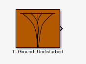
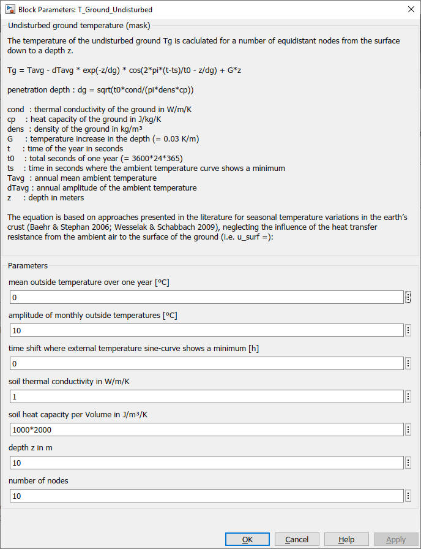

T_Ground_Undisturbed
Path: CARNOT/Basic/Thermal_Models
Purpose
Temperature of the undisturbed ground at a certain depth over the year.
Description
The temperature of the undisturbed ground Tg is caclulated for a number of equidistant nodes from the surface down to a depth z.
Tg = Tavg - dTavg * exp(-z/dg) * cos(2*pi*(t-ts)/t0 - z/dg) + G*z
penetration depth : dg = sqrt(t0*cond/(pi*dens*cp))
cond : thermal conductivity of the ground in W/m/K
cp : heat capacity of the ground in J/kg/K
dens : density of the ground in kg/m³
G : temperature increase in the depth (= 0.03 K/m)
t : time of the year in seconds
t0 : total seconds of one year (= 3600*24*365)
ts : time in seconds where the ambient temperature curve shows a minimum
Tavg : annual mean ambient temperature
dTavg : annual amplitude of the ambient temperature
z : depth in meters
The equation is based on approaches presented in the literature for seasonal temperature variations in the earth’s crust (Baehr & Stephan 2006; Wesselak & Schabbach 2009), neglecting the influence of the heat transfer resistance from the ambient air to the surface of the ground (i.e. u_surf ).
Parameters and Dialog Box

Characteristics
Direct Feedthrough No
Sample
time
Inherited
from driving block
States
1
Vectorized
No